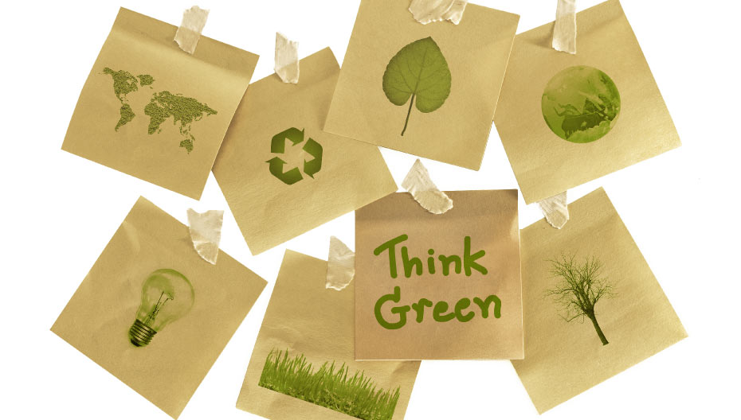
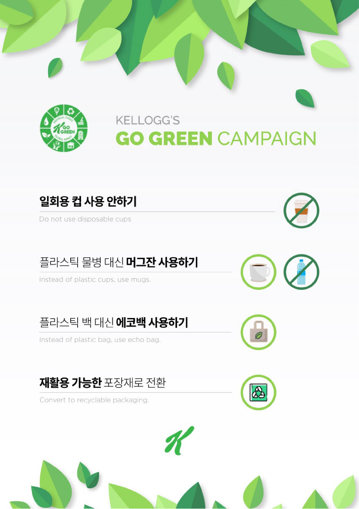

고 그린 캠페인은 환경 및 자원 보호를 위해 전 세계 곳곳의 켈로그에서 펼치고 있는 환경 캠페인으로 한국에서는 2019년에 공식 출범되었습니다. ‘우리 지구 보살피기’ 아래 음식물 쓰레기 및 플라스틱 배출 최소화, 포장재 줄이기 등 환경보존 활동들을 전개하고 있습니다.

켈로그는 2018년에 미국 미시간주(州) 배틀 크릭 본사와 시카고 사무실에서119톤 음식물 쓰레기, 플라스틱 병 11만 1천개, 플라스틱 빨대 10만 5천개 등의 배출 감소를 통해 온실 가스 감축에 성공했습니다. 아시아태평양 지역에서도 총 80만여개에 달하는 일회용품 사용을 줄였습니다. 농심켈로그도 사무실에서 다회용컵 사용, 일회용품 사용 줄이기, 재활용 분리수거 구역 생성 등 실질적인 환경보호 활동에 적극적으로 동참하고 있습니다. 앞으로도 물, 에너지 사용량과 쓰레기 폐기 물량을 줄이는 데 앞장서겠습니다.
